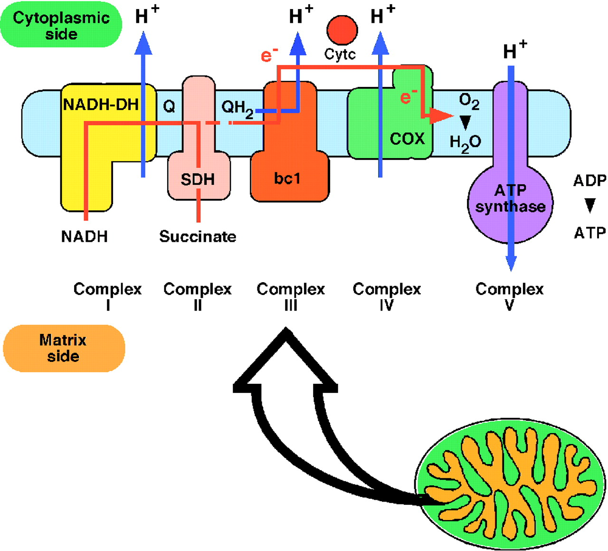

Metabolizam
Metabolizam je sveukupnost metaboličkih procesa neophodnih za održavanje života.U procesu metabolizma složene molekule se mogu sintetizirati ili razgrađivati. u složenim se molekulama energija pohranjuje ili se oslobađa njihovom razgradnjom. Osnovna uloga metabolizma je stvaranje energijom bogate molekule ATP-a. Metabolički procesi se odvijaju u nizovima pojedinačnih reakcija, a svaku od njih katalizira i kontrolira određeni enzim. Struktura tih enzima kontrolora određena je zapisom na genima, a raznim mutacijama dolazi do prirođenih pogrešaka u metabolizmu koje itekako utječu na život pojedinca, a neke od njih su: lipidoze, galaktozemije... Metabolizam se odvija u nekoliko ciklusa. Prvo je potrebno razgraditi uskladištene polimerne makromolekule na monomere. Zatim, potrebno je te monomere razgraditi bez prisutnosti kisika pri čemu većina ugljikova atoma završava u obliku acetil-koenzima A. To se događa u procesu glikolize. Nadalje, nastupa oksidativni stupanj metabolizma koji se odvija upravo u mitohondriju. To su procesi limunskog ciklusa i oksidativne fosforilacije, u kojima se koenzimi NAD+ i FAD reduciraju u NADH i FADH2, da bi se tijekom oksidativne fosforilacije oksidirali kisikom iz zraka, pri čemu se adenozin - difosfat fosforilira u ATP. Podrobnije o ovim procesima pročitajte na slijedećoj stranici:
